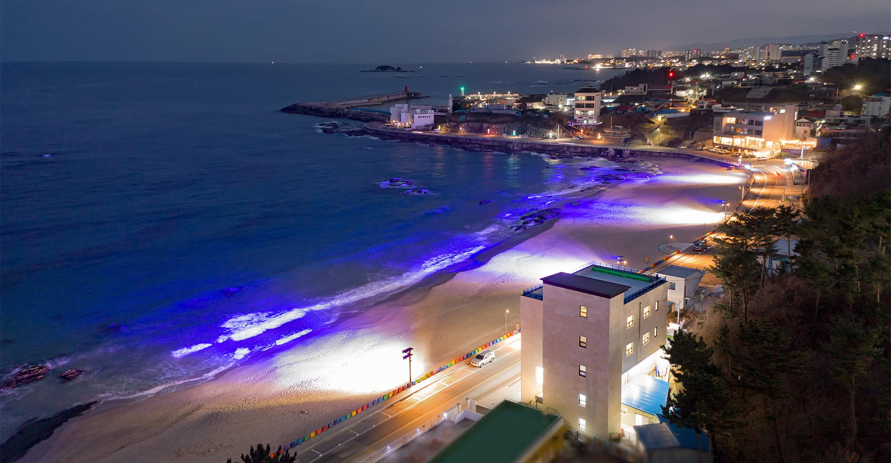

ENFP 추천 여행지
강원도 고성

추천 이유
ENFP는 새로운 경험과 자유로운 분위기를 좋아하는 성향을 가지고 있습니다. 고성은 탁 트인 동해 바다와 다양한 해양 액티비티, 감성적인 풍경을 함께 즐길 수 있는 여행지로 ENFP의 호기심과 모험심을 충족시켜 줍니다.
추천 여행 코스
- 송지호 해수욕장
- 통일전망대
- 아야진 해수욕장
- 하늬 라벤더 팜
추천 포인트
- 동해의 시원한 바다 풍경 감상
- 캠핑, 트래킹, 해양 액티비티 가능
- 라벤더 아이스크림과 포토스팟 즐기기
- 친구들과 자유롭게 여행하기 좋은 분위기